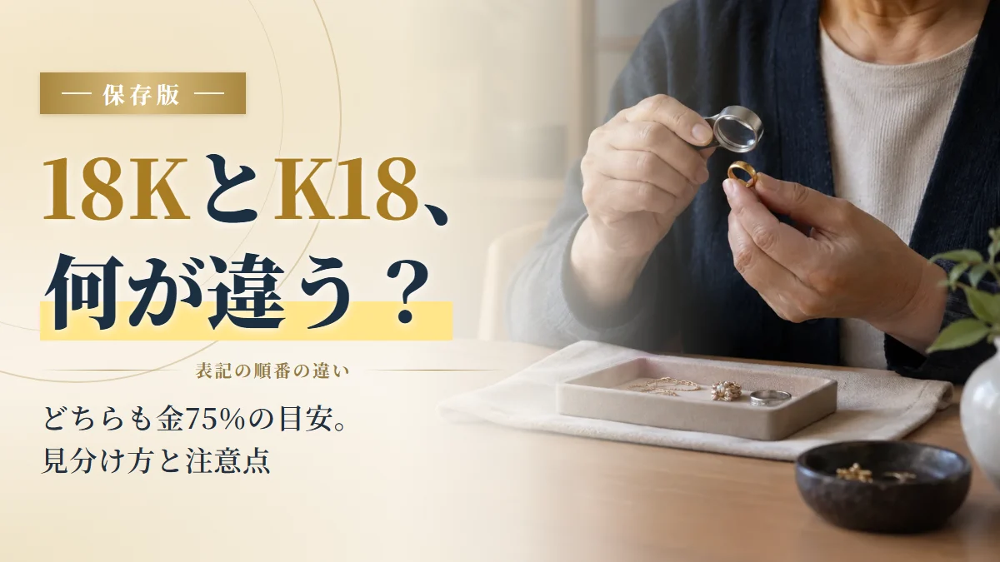
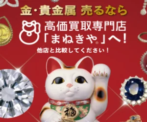
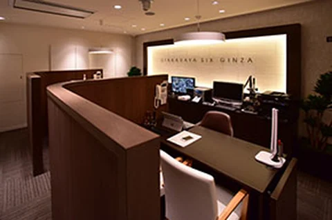
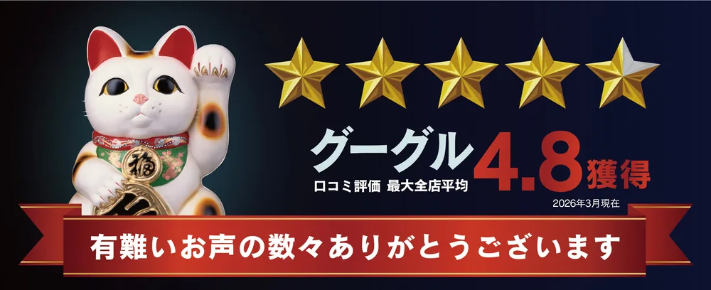
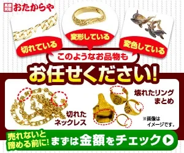

18KとK18の違いは？どちらも同じ18金です｜見分け方と注意点

「18KとK18って、何が違うの？」
「この刻印、本当に金なの…？」
そんな疑問、ありませんか？
その気持ち、よくわかります。
刻印の書き方がちがうと、別の物に見えますよね。
でも、安心してください。答えはかんたんです。
18KとK18は、どちらも同じ「18金」
書く順番がちがうだけで、中身は同じ。
どちらも金が約75％ふくまれている、という意味です。
※本ページにはプロモーションが含まれています。
※掲載の評価・順位は編集部の主観的な比較で、買取価格を保証するものではありません。
18KとK18は同じ意味です
「K」は、金の純度をあらわす記号。
「18」は、24を100％としたときの18、つまり約75％という意味です。
日本製はK18、海外製は18Kと書かれていることが多いですが、
どちらも同じ18金です。
ほかの刻印も、まとめておきますね。
| 刻印 | 意味 |
|---|---|
| K18・18K・750 | 18金（金が約75％） |
| K24・24K・999 | 純金（ほぼ100％） |
| K14・14K・585 | 14金（金が約58％） |
| GP・K18GP | 金メッキ（表面だけ金） |
| GF・K18GF | 金張り（表面に金の板） |
※参考：造幣局「貴金属製品の品位区分と証明記号」（2026年9月確認）。刻印の意味の目安です。実際の素材は、現物を見て確かめてください。
とくに注意したいのが、「K18」のうしろにGPやGFがつく刻印。
これは18金ではなく、メッキや金張りです。
ただし、刻印だけでは本物か分からないことも
「K18って書いてあるから、本物の金でしょ？」
そう思いたくなりますが、刻印はあくまで手がかりです。
- 刻印があるから、中まで金のはず
- 磁石につかないから、金にまちがいない
- 削ったり、火であぶったりすれば分かる（品物を傷めます）
- 刻印を拡大して、写真に残す
- 色や、はがれ・変色がないか見る
- 磁石や重さは「参考」くらいに考える
それでも、刻印がない・読めない・古くて由来が分からない物は、
家では素材が分かりません。
本当の素材と今の値段は、お店でしか分からない
査定は無料で、売るかどうかは金額を見てから決められます。
「金かどうか」を知るだけでも大丈夫です。
刻印が分からない金も見てくれる 買取店3社を比較
見てもらうお店は、この4つで選ぶと失敗しません。
- 素材不明・状態が悪い品にも対応している
- 専門の機械や査定方法を説明している
- 査定料・キャンセル料が分かりやすい
- 手数料を引いた、最後にもらえる金額を比べられる
この4つを中心に、3社を比べました。
表は横にスクロール可能
| 買取店 | 総合評価 | 査定のしかた | 金の手数料 | キャンセル料 | 買取方法 | 特徴 |
|---|---|---|---|---|---|---|
| 公式サイト | まねきや★★★★★5.0点編集部おすすめ | X線分析装置 マイクロスコープ | 0円 キャンペーン中 | 無料 | 店舗・出張・宅配 | 業者の値段で買取。電話予約で最大20%UP（9月30日まで） |
| 公式サイト | おたからや★★★★☆4.5点 | プロの鑑定士 | 無料 | 無料 | 店舗・出張 | 全国1,980店舗以上。近くで持ち込める |
| 公式サイト | ブラリバ★★★★☆4.5点 | 査定士 | — | 無料 | 店舗・出張・宅配 | 全店舗が駅から5分以内。即日現金化 |
表は横にスクロール可能
【結論】
18KとK18は、どちらも同じ18金。
でも、刻印だけでは本物かどうか言い切れないこともあります。
確実に知りたいなら、X線の機械で中身を測ってくれる「まねきや」で、無料で見てもらうのがおすすめ。
「いつか調べよう」で、損していませんか？
「使っていないけど、そのうち調べればいいか」
そう思って、引き出しにしまったままにしていませんか？
実は、金の値段は毎日変わります。
しかも、この半年でかなり大きく動きました。

3月の最高値から、1gあたり約5,800円も下がっています。
18金のアクセサリーなら、10gで約4.4万円、30gで約13万円の差です。
そして、この先また上がる保証はありません。
「そのうち」が、一番こわい
しかも、しまったままだと、
どこにしまったか忘れたり、価値を知らない家族が手放してしまったりすることも。
売るかどうかは、あとで決めればOK。
まずは「今いくらになるか」だけ、知っておきましょう。
※金の値段は田中貴金属の店頭小売価格（税込）。過去最高値は2026年3月3日、現在値は2026年9月25日の値です。18金は金75%として換算した目安です。過去の値動きは、将来を約束するものではありません。
刻印が分からない金を見てもらうならここ！買取店3選（査定無料）
🥇第1位：まねきや｜X線で中身まで測って査定（PR）

「これって金？」でもOK
まねきやは、全国に30店舗以上ある買取の専門店。
刻印が読めない品も、X線の機械で中身を測って査定してくれます。


※店舗により内装は異なります。
お店は落ち着いた雰囲気で、個室のような査定スペースもあります。
初めてでも入りやすいお店です。
- 刻印が読めない金も、X線の機械で中身を測れる
- お店同士が取引する「業者の値段」で買い取り
- 金の手数料が0円（キャンペーン中）
- 査定料・出張料・キャンセル料は無料
- 電話予約で買取額 最大20%UP（9月30日まで）
電話1本で、見てもらう日を決められます。
売るかどうかは、金額を聞いてから決めればOKです。
「これって金？」でもOK！査定が難しい品にも対応
「刻印が消えてて、金かどうか分からない…」
そんな品でも大丈夫。
まねきやは、ほかのお店で断られた金でも、買い取ってもらえることがあります。

- 高性能な専門機器を使って、正確に査定
- 豊富な商品知識による、確かな目利き
- レア金属を取り出す、オリジナルの手法
機械を使って、その場で金額を出してくれます。
金かどうか分からなくても、捨てる前に一度見てもらいましょう。
▶まねきやに電話で相談してみる└査定だけでもOK
まねきや利用者の声

まねきやは、Googleの口コミ評価で4.8を獲得しています（最大全店平均・2026年3月現在）。
利用者の声（店頭で売却）
このようなお店は少し怖いイメージがありましたが、実際に行ってみると居心地も良く、店員さんが一つ一つ説明してくれました。
利用者の声（X線で測定）
X線の機械で細かく計測してもらい、前回ほかで売った時よりも高く買い取ってもらえました。刻印のない金でも含有量を測れるそうです。
利用者の声（インゴットを売却）
今回も50gのインゴットを数枚買い取ってもらいました。金相場が上がっているとのことで、購入金額よりも高く売れました。
※公式サイト掲載の口コミを要約したものです。感想には個人差があり、同等の対応・金額を保証するものではありません。
見てもらうまでの流れ（聞くだけでもOK）
- 電話で査定を予約 (通話無料・9:00〜21:00)
- お店・出張・宅配から選ぶ
- 素材と、全部でいくらになるか聞く
- 納得できたら売る (断っても0円)

電話で申し込むだけで、買取額が最大20%UP。
このキャンペーンは9月30日までです。
終わってからでは、この上乗せは受けられません。
迷っているなら、今のうちに金額だけ聞いておきましょう。
🥈第2位：おたからや｜近くのお店に持ち込みたいなら（PR）

「近所で、すぐ見てもらいたい」
そんな人に合うのが、おたからやです。
全国47都道府県に、1,980店舗以上あります（※1）。
- 全国1,980店舗以上（※1）
- 買取手数料・査定料が無料
- Googleの口コミで4.8（※2）
※1 2026年9月時点 ※2 2026年1月1日〜5月31日の直営店（422店舗）のGoogleの評価をもとに公式サイトが公表している数値
▶おたからや公式サイトを見る└受付は19時まで
🥉第3位：ブラリバ｜今日すぐ現金がほしいなら（PR）

「仕事帰りに、さっと寄りたい」
そんな人に合うのが、ブラリバです。
全店舗が駅から5分以内で、その日のうちに現金にできます。
- 全国20店舗以上、全店舗が駅から5分以内
- 高額査定＆即日現金化
- 店頭・出張・宅配の3つから選べる
▶ブラリバ公式サイトを見る└LINE査定は24時間受付
まずは無料で、素材と金額を確かめよう
18KとK18は、どちらも同じ18金。
でも、刻印だけでは本物かどうか言い切れないこともあります。
家で削ったり、あぶったりするのはやめて、
お店の機械で、傷をつけずに調べてもらいましょう。
今回紹介したお店は、どこも査定は無料。
金額を聞いて、断っても大丈夫です。
「売る」ではなく「素材と金額を知る」
まずはここから始めてみてください。
- 本ページはプロモーションを含みます。
- 掲載の順位・総合評価は編集部の主観的な比較であり、買取価格の優劣を保証するものではありません。
- 刻印の意味は目安です。実際の素材・金額は、現物の査定で決まります。
- 「最大20%UP」等のキャンペーンは対象品・上限などの条件があります。適用条件は申込時にご確認ください。
- 掲載内容は2026年9月27日時点の情報です。最新の条件は各社公式サイトでご確認ください。